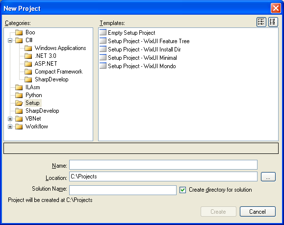
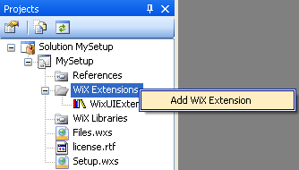
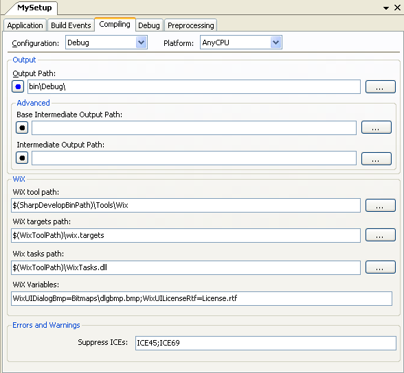

SharpDevelop 3.0 now supports WiX 3.0.
There are some changes to how things work compared to the WiX integration in SharpDevelop 2. The differences will be covered in the following sections.
There are some new WiX project templates available. A basic empty project template and a template for each of the standard WiX UI library dialog sequences.

WiX extensions are now displayed in the project browser instead of in the project options. They can be added by right clicking the WiX Extensions folder and selecting Add WiX Extension.
.
The Library and Linking tabs have been removed from the project options since the WiX extensions can now be added from the project browser.
The Compiling tab has some new options as shown below.

The WiX Variables field can be used to override the standard WiX UI library settings. In the screenshot above the standard licence agreement and dialog background bitmap are being replaced with new ones.
The Suppress ICEs field is used to stop WiX from showing errors or warnings for particular Internal Consistency Evaluators (ICEs). After building your installer WiX now validates it against a standard set of rules which saves you from having to use another validation tool such as Orca.
Localized string files are no longer specified in the Application's tab. Instead add the file to the project and change its Build action to Embedded Resource.
If you want integration with Visual Studio 2005 or 2008 then please check out Justin Rockwood's Votive.
Rob Mensching has a list of WiX editors, including commerical ones, on his blog.
It also looks like a future version of Visual Studio will ship with WiX.